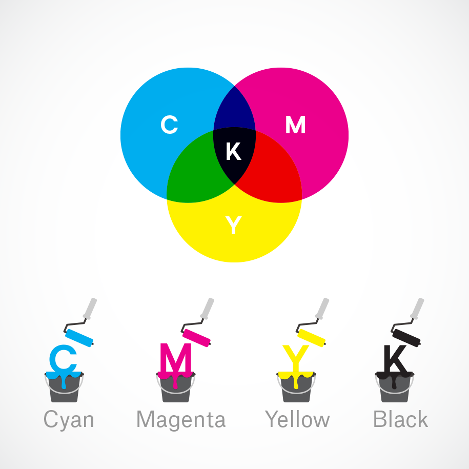

Software Design
CMYK Conversion
RGB values are colors defined by the amounts of red, green, and blue
light they contain. CMYK values are colors defined by the amounts of
cyan, magenta, yellow, and black pigment they contain. We used the
CMY primary colors because we were mixing pigment, and we decided to
allow the user to pick a HEX value -- which are simply RGB values
strung together in hexadecimal to make a 6-digit string -- because
it would be an easier format for a user to enter. Thus, we needed to
convert from HEX to CMYK.

Source
Very coincidentally, someone had already written a
HEX to CMYK
conversion in JavaScript. We used its logic to write our own HEX
to CMYK conversion in C. Our conversion took a HEX code as character
array of length 6, pulled the RGB values from it, then converted
those according to the referenced code.
Color Sensing
The TCS34725 came with its own arduino source code and library.
Here is a link to the
original github repo.
In this code, we took the example tcs34725.ino, renamed it COLORSENSOR.ino, and modified it to fit our
needs.
The original code got the raw RGB values and also some extra
calculations such as color temperature, which we removed.
The color sensor raw outputs range from 0-65535. In order to make
them usable RGB values, we divided the raw value by 256 to scale it
to 0-255. However, this number usually ended up fairly small within
the 0-255 range (generally under 30), so multiplied it by 10.
Sometimes the “multiply by 10” put the value above 255.
In this case, we did a second scale to the RGB values so the
highest one is 255 and the rest are scaled down accordingly.
Once we had usable RGB values between 0-255, we converted the values
float to integer. This integer was compared to the previous RGB
values, which were saved in global variables. If the value is the
same as the previous value, it will then convert those integer RGB
values to hex and then put them into strings, which are concatenated
and then sent serially to the PIC. If the values do not match the
global variables, we set the current values to the global variables
and begin the scan again. The requirement for the values to be
matched allows for greater accuracy in which color is output.
PWM and Servo Control
For this project, we utilized a singular timer with four different output compare units using it as a
source. The four output compare units were wired to RB9, RB5, RB2, and RA2, each generating a PWM signal for
a different servo. Servos were initialized to a closed state based on how they had been mounted. Once ready
to dispense the dye, we used the values from the CMYK conversion as timing for how long each servo should be
open. We scaled the values, so the maximum time a servo could be open was one second and the minimum was ten
milliseconds. To have each servo remain in a given position, we found that setting the corresponding duty
cycle to zero worked. We were then able to target each servo individually, modifying the period and
corresponding duty cycle. We created the timings by having the servo thread yield for the specified time as
shown below.
generate_period2 = (int)(((20.0 + 0.85) / 32.0) * 40000);
pwm_on_time3 = (int)((0.85 / 32.0) * 40000);
WritePeriod2(generate_period2);
SetDCOC3PWM(pwm_on_time3);
PT_YIELD_TIME_msec(10*error_m);
Additionally, to have the timer count for larger intervals, we
increased the prescaler in the timer declaration.
OpenTimer2(T2_ON | T2_SOURCE_INT | T2_PS_1_32, generate_period2);
Serial Communication
In order to implement two lines of serial communication on the PIC --
one to the computer for user input, and one to the Arduino to read the
color sensor values -- we referenced the instructions on
the class webpage.
Using Protothreads 1.3.3, we used the main serial channel to communicate with the PC and the auxiliary
serial channel to communicate with the Arduino. For the serial PC communication, we used a UART to USB
serial cable, connecting RA1 to RX, RB10 to TX, and grounding both. Similarly, for the arduino, we connected
RB13 to the arduino RX and RB7 to the arduino TX.
To transmit and receive from the PIC32, we used the serial buffers for the main and auxiliary channels. To
write, using the main as an example:
sprintf(PT_send_buffer, “hex #”);
PT_SPAWN(pt, &pt_DMA_output, PT_DMA_PutSerialBuffer(&pt_DMA_output));
To read, using auxiliary as an example:
PT_SPAWN(pt, &pt_input_aux, PT_GetSerialBuffer_aux(&pt_input_aux));
sscanf(PT_term_buffer_aux, “%s”, &hex_value);
Please note that
PT_term_buffer_aux is not originally defined in
pt_1_3_3.h. This
is something we defined
based off of how
PT_term_buffer was written.
Feedback Control
We opted to do user prompted feedback control due to the inconsistency
of the color sensor. By prompting users if (1) they wanted to adjust t
he color and (2) to hold a sample up to the color sensor, we could
obtain a more accurate reading without having to handle the color
sensor being splashed (if we had placed the sensor close to the
mixture) and reflectance of the color sensor’s LED (if we had used
a clear container for the mixture).
To perform feedback, we wrote a simple ready/request protocol, where
the Arduino would initialize and waiting for a request from the
PIC32. When a user requested a color adjustment, we would then write
a request to the auxiliary serial buffer and then wait for Arduino.
The Arduino would then read to color sensor, convert the value to hex,
and write that to the serial buffer before going back to its ready state.
The PIC32 would then use HEX to CMYK conversion and compare the sensor
values with the expected color values.
We again prompted the user, displaying both the observed and expected
values, asking the user if they wanted to proceed with an adjustment.
If yes, then we observed which of the expected color channels (CMY)
were zero, because at most two are nonzero at any one time, and
calculated additive adjustments for the nonzero channels as shown below.
For the black channel, we only checked if the observed color was too
bright, and then added more pigment if so. We then used the adjustment
values to control the servo timings to dispense the appropriate amount
of pigment for the adjustment.
if(final_c < 5){
if(y2 < final_y){
error_y = final_y - y2;
}
if(m2 < final_m){
error_m=final_m - m2;
}
}
Aside: Color Sensor as Input
Although this did not make our final demo code due to time
constraints, we did write code to use the color sensor as an input
option in addition to the terminal hex value. The idea behind this
was to be able to replicate the colors of specific objects. The code
functioned similarly to the user prompted feedback control in that
the system would ask the user whether they would want to input a hex
code or scan an object. This version was not included in our demo
due to inaccuracy of the color sensor on objects with reflective
surfaces and variable ambient lighting conditions.